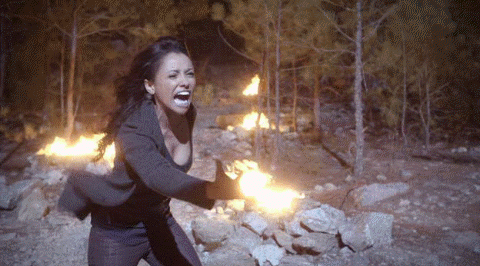

Kacie Watson's Vampire Diaries Fan Page
Remorable moments

Bonnie taking down Klaus summoning the power of 100 witches
Damon stealing our hearts as always
Katherine (elenas doppleganger) being sassy as always
Jeremy becoming a vampire hunter
Enzo also stealing our hearts

When the possibilty of klaus and caroline was introduced and we found
Klaus fancies Caroline
Tyler preparing to turn into a werewolf